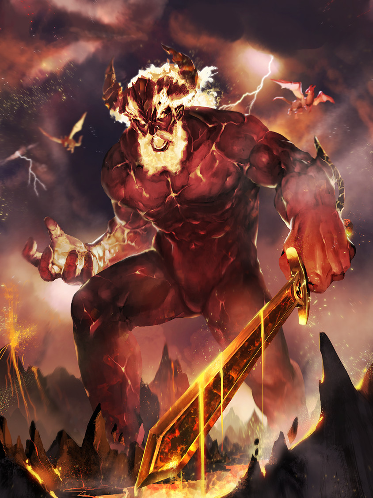
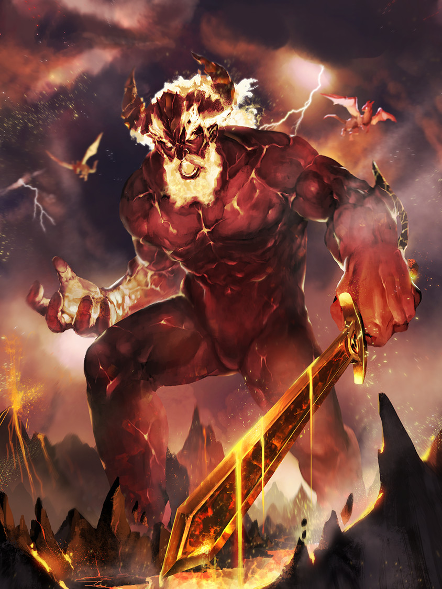

| The Gods Of Norse Mythology | Ragnarock | The Nine Realms | Jormungander |
| Tells You About The Gods And Its Confusing | Tells You How The Gods Die And Who Kills Them | Tells You About The Realms The Gods Live In | Its A Giant Snake Not Gonna Lie(Its Pretty Damn Cool) |
 
